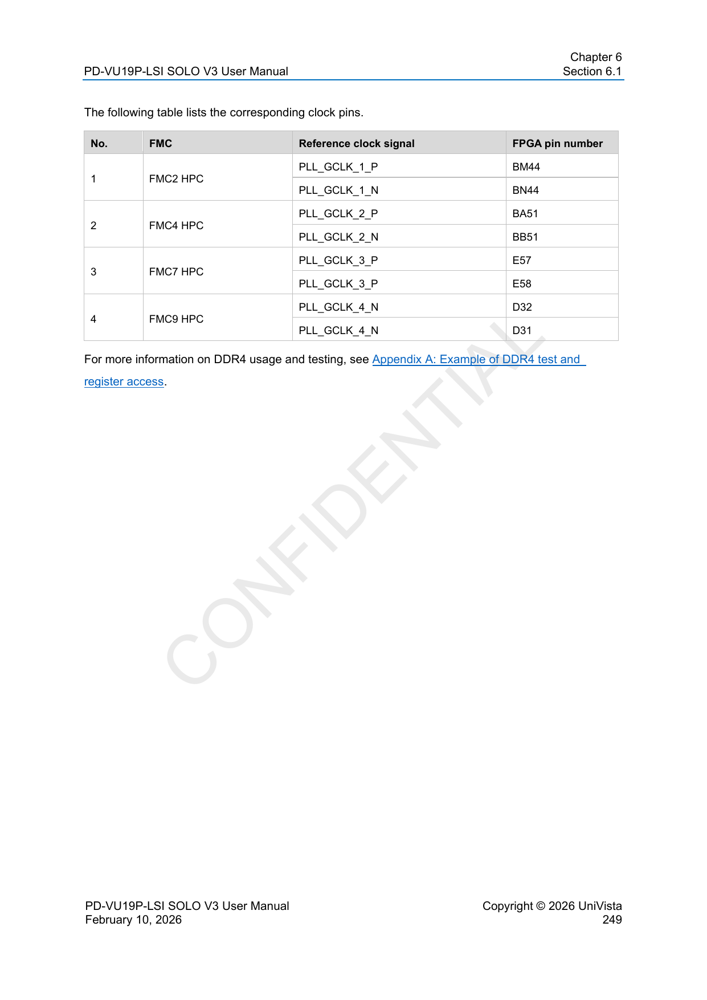
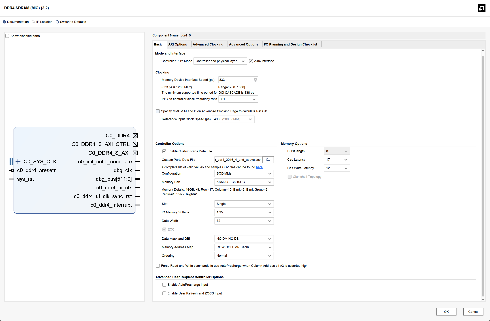
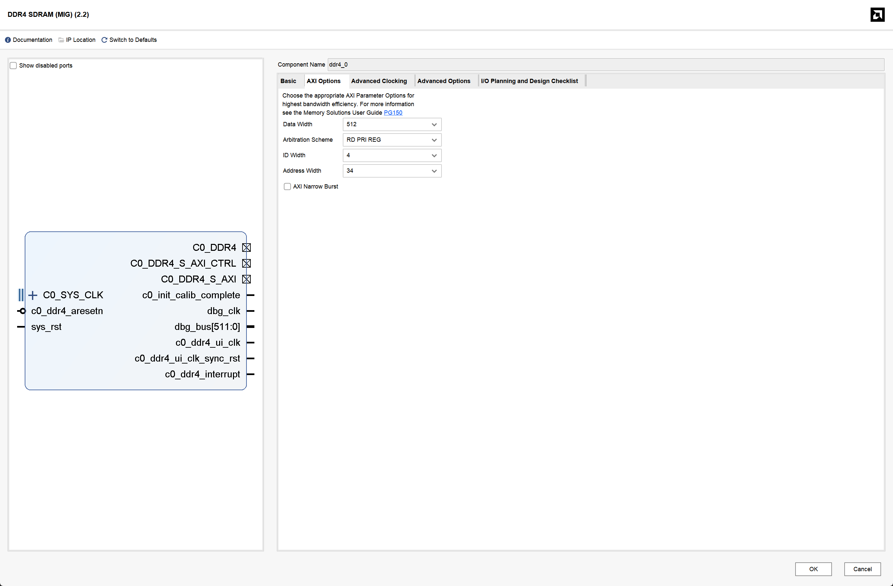
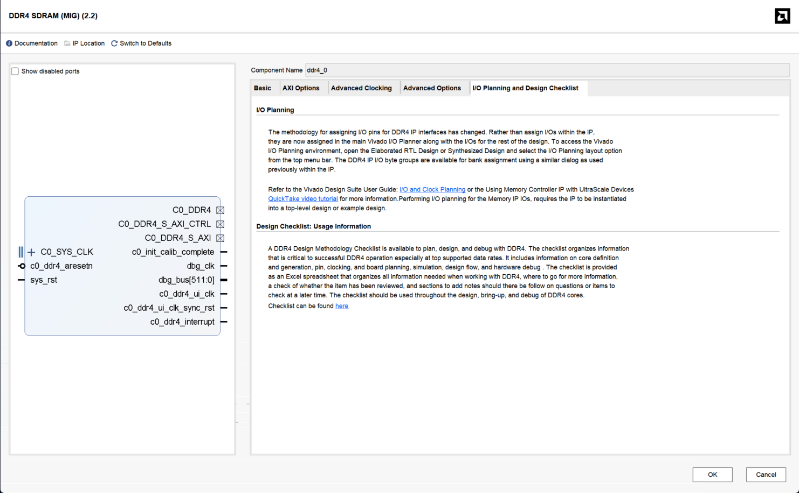
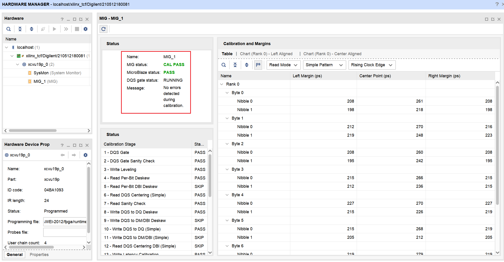

4.1.2 使用 VU19P-SOLO V3 上的 DRAM
本文记录 UniVista PD-VU19P-LSI SOLO V3 的 DDR4 子卡接入流程：
安装并连接 AEConsole
→ 配置 FMC9 电压与参考时钟
→ 用 Vivado GUI 生成 DDR4 MIG
→ 把 MIG 接到自己 SoC 的 AXI
→ 补顶层 XDC
→ 综合、实现、生成 bitstream
→ 上板检查 CAL PASS 与 SoC 读写
本文以本机 Windows 11 + Vivado 2023.2 + AEConsole 2.4.2 为例。板卡 IP、安装目录、PC 网卡名等属于本机配置，换机器时按实际值替换。
文中给出的 AXI 位宽转换、CDC 和 xbar 都是 PULP common cells 中的通用模块（Solderpad 0.51），不依赖某个具体项目的 RTL；SoC 侧的端口名、地址窗口和文件组织请按自己的工程调整。
1. 硬件组合与关键参数
本例使用：
| 部件 | 型号 | 关键参数 |
|---|---|---|
| FPGA 平台 | PD-VU19P-LSI SOLO V3 | DUT-FPGA 为 xcvu19p-fsva3824-2-e |
| DDR 子卡 | UV-FMCH-PDDR4DME | 260-pin DDR4 DIMM 插槽，最高 2400 Mbps |
| 内存条 | Kingston KSM26SES8/16HC | 16 GiB、1Rx8、DDR4-2666、ECC SODIMM、1.2 V |
| 颗粒 | SK hynix H5ANAG8NCJR | 16Gb x8，Row 17 / Column 10，DDR4-3200 速率档 |
速率按最低者决定：
因此 MIG 的 Memory Device Interface Speed = 833 ps。不要因为内存条标称 2666 就配置为 750 ps。
时钟分三类：
| 时钟 | 当前值 | 来源与用途 |
|---|---|---|
| SoC 系统时钟 | 20 MHz | 由 SoC 的 clock_ip 生成，供 CPU 和 SoC AXI 使用 |
| MIG 参考时钟 | 200 MHz | 板级 Si5345 的 GC08 / HP71_GC08，FPGA 引脚 D32/D31 |
MIG ui_clk |
300 MHz | MIG 内部 PLL 产生，供 MIG AXI 使用 |
MIG 的 PHY 时钟和 ui_clk 都由 MIG 内部管理，不需要再为 MIG PHY 单独例化 Clocking Wizard。
2. 准备 AEConsole 与板卡连接
2.1 安装 AEConsole
为了配置 DDR 子卡和板卡的参考时钟，需要安装 AEConsole，使用 UniVista 官方的软件控制 FPGA 资源，而不能像通常 FPGA 流程一样，仅仅使用 Vivado。
从课题组飞书共享文件夹取得 AEConsole 安装包并安装，推荐在 Windows 主机上安装。若使用 USB 连接，还需要安装 FX3 驱动；本机安装包中驱动位于：
如果只使用 Ethernet，可跳过 USB 驱动。
2.2 Ethernet 连接（推荐日常方式）
- 用网线连接 PC 与板卡后板 ETH-A；
- 查看板卡机身标签上的真实 IP，不要直接套用手册示例；
- 将 PC 网卡配置到同一网段，例如板卡为
192.168.1.10/24时，PC 可设为192.168.1.100/24； - 验证：
- 在 AEConsole 中 AddBoard：
Board Name任意；Connect Mode = NetWork；Board Addr = 192.168.1.10；Port = 10001；- 勾选后点击 Connect。
USB 模式可作为救急路径。此时 Board Addr 填板卡 MAC 地址，不是 USB 序列号。
Phase A：硬件接入与 MIG 配置
A1. 先把 FMC9 电压配置为 1.2 V
DDR4 子卡是标准的 FMC 接口，VU19P-SOLO V3 有 12 个 FMC 接口，但是其中只有几个接口支持 DDR4 子卡，在这个案例中使用 FMC9 HPC。DDR4 子卡的电压要求为 1.2 V，而板卡默认 FMC9 的 IO 电压为 1.8 V，如果直接插入 DDR4 子卡可能会损坏子卡。
- 不插 DDR 子卡，打开 AEConsole 的 FMC Voltage Setting；
- 将 FMC9 设为 1.2 V，对应开关置 ON；
- 重启平台电源保存配置；
- 回到界面确认 FMC9 已切换为约 1.2 V。
A2. 断电插入 DDR 子卡
- 关闭平台电源；
- 将 DDR 子卡插入 FMC9 HPC；
- 插入 Kingston 内存条；
- 重新上电并确认 AEConsole 能正常连回。
A3. 配置 GC08 参考时钟
这里要区分 SoC 系统时钟 和 MIG 参考时钟，它们不是由同一个模块产生的：
板载 54 MHz OSC
→ 板级 Si5345（由 AEConsole 配置）
→ GC08 = 200 MHz
→ FPGA 引脚 D32/D31
→ MIG 的 c0_sys_clk_p/n
→ MIG 内部 PLL → ui_clk = 300 MHz
另一条独立路径：
FPGA 内部 clock_ip（MMCM/PLL）
→ SoC 系统时钟 clk = 20 MHz
为什么不能像系统时钟一样只在 Vivado 里生成 Clocking IP？ 因为 clock_ip 只能配置 FPGA 内部的 MMCM/PLL，而 MIG 这里的参考时钟来自 板卡上的 Si5345。AEConsole 配置的是板级时钟芯片，负责把实际的 200 MHz 差分时钟送到 MIG 的专用引脚；Vivado 里的 clock_ip 不会替我们完成这块板级芯片的配置。
MIG 自己内部还会用参考时钟生成 ui_clk 和 PHY 时钟，所以本例是：
- AEConsole 配 Si5345，给 MIG 提供参考时钟；
- FPGA
clock_ip给 SoC 提供 20 MHz； - MIG 内部 PLL 产生
ui_clk和 DIMM 时钟。
FMC 座与 AEConsole 时钟通道的对应关系是固定的。 本例选择 FMC9，其关系为：
| 项目 | 对应关系 |
|---|---|
| FMC 座 | FMC9 HPC |
| AEConsole 通道 | GC08 / HP71_GC08 |
| 手册中的 DDR 参考时钟名 | PLL_GCLK_4_P/N |
| FPGA 引脚 | D32 / D31 |
| 去向 | MIG c0_sys_clk_p/n |
如果改用 FMC2，就应该选择 GC02 / HP20_GC02（BM44/BN44），而不是 GC08；其他 FMC 座也必须按各自的 GC 通道选择，不能只看频率相同就随便选。
具体操作：
- 在 AEConsole 中打开 Global Clock；
- 输入源选择 OSC 54 MHz；
- 使能 GC08 / HP71_GC08；
- 输出频率设为 200 MHz；
- 点击 Program，需要断电保存时勾选存 SD 卡；
- 读回确认 GC08 为 200 MHz 且已使能。
PLL_GCLK_x 实际是板载 Si5345 的可配置全局时钟输出，不需要外购时钟模块。

A4. 用 Vivado GUI 定制 DDR4 MIG
在自己的 Vivado 工程中打开 IP Catalog → DDR4 SDRAM (MIG)。
A4.1 导入内存条定义
MIG 预置列表主要是 Micron 部件，没有本例的 SK hynix 颗粒，因此使用自定义 CSV：
- 勾选 Enable Custom Parts Data File；
- 导入
custom_parts_ddr4_2016_4_and_above.csv； - Configuration 选择 SODIMMs；
- Memory Part 选择
KSM26SES8_16HC。
导入后应看到 16GB, x8, Row=17, Column=10, Ranks=1。其中：
Data mask = 1；Data bits per strobe = 8；Row width = 17。
这些字段决定 MIG 的颗粒模型、地址宽度和 ECC 行为，不要直接套用 x4 颗粒模板。
A4.2 Basic 页
| 字段 | 本例设置 | 原因 |
|---|---|---|
| Memory Device Interface Speed | 833 ps | 子卡最高 2400 Mbps |
| PHY to controller clock ratio | 4:1 | 得到可用的 300 MHz ui_clk |
| Reference Input Clock Speed | 4998 ps（约 200 MHz） | 与 GC08 实际输出一致 |
| Configuration / Memory Part | SODIMMs / KSM26SES8_16HC |
与实物一致 |
| Data Width / ECC | 72 / ECC 开启 | 子卡是 x72 ECC SODIMM |
| Cas Latency / CWL | 17 / 12 | DDR4-2400 标准时序 |
| Memory Address Map | ROW COLUMN BANK | 使用 MIG 默认映射 |

A4.3 AXI Options 页
| 字段 | 本例设置 | 原因 |
|---|---|---|
| AXI4 Interface | 开启 | SoC 通过 AXI 访问 MIG |
| Data Width | 512 | 这是 MIG AXI 口宽度，不是 SoC 的 64-bit |
| Address Width | 34 | 16 GiB 需要 34 位字节地址 |
| ID Width | 按 SoC 侧 ID 宽度配置 | 只有一路 SoC master 时与它一致即可 |
| AXI Narrow Burst | 开启 | SoC 的单拍小位宽访问需要 narrow transaction |
| Arbitration Scheme | RD PRI REG | 使用 MIG 默认读/写调度策略 |

最后点击 OK → Generate Output Products。本阶段不需要在 MIG GUI 中分配引脚，也不需要单独启动一次 IP synthesis。

该页面只是流程说明，不是本例分配 DDR4 引脚的入口；引脚约束在 Phase B 的顶层 XDC 中完成。
Phase B：SoC 集成、XDC 与 FPGA 构建
B1. 把 MIG 接到 SoC 的 AXI
MIG 对外是一路 AXI slave。如果 SoC 的 AXI 位宽或时钟与它不同，中间需要插入通用适配模块：
SoC AXI master（例如 64-bit）
│
▼
axi_dw_converter_intf（位宽转换，64 → 512）
│
▼
axi_cdc_intf（跨时钟域，SoC clk → MIG ui_clk）
│
▼
MIG AXI slave（512-bit）
│
▼
FMC9 DDR4
这几个模块都是 PULP common cells 中的通用件，可以直接复用：
| 模块 | 作用 | 关键参数 |
|---|---|---|
axi_dw_converter_intf |
AXI 数据位宽转换 | AXI_SLV_PORT_DATA_WIDTH、AXI_MST_PORT_DATA_WIDTH、AXI_MAX_READS |
axi_cdc_intf |
跨时钟域 | AXI_DATA_WIDTH、LOG_DEPTH |
axi_xbar_intf |
多 master 汇聚（可选，见第 4 节） | NoSlvPorts、NoMstPorts |
SoC 侧需要自己完成的事情：
- 新增一个 AXI slave 端口/地址窗口：让 CPU 能访问 MIG，并把这段地址标记为 non-cacheable（避免软件 flush/invalidate 契约）；
- 引出 MIG 物理接口：
c0_sys_clk_p/n和c0_ddr4_*必须在顶层作为端口出现，否则 XDC 无法绑定引脚； - 例化 MIG 与上面两个适配器：MIG 的
S_AXI_CTRL（ECC 状态/控制口）如果不用，就只在本地 tie-off，不要引到 SoC； - 复位与时钟：MIG 的
ui_clk和ui_clk_sync_rst只供 MIG AXI 侧使用，CDC 的dst_clk/dst_rst接它们即可。
如果 SoC AXI 与 MIG AXI 位宽相同、时钟也同源，可以省掉 axi_dw_converter_intf 或 axi_cdc_intf；只要保证 MIG 侧所有信号都在 ui_clk 域。
B2. 补顶层 DDR4 XDC
在你自己的顶层约束文件（XDC）里加入 DDR4 引脚约束。本例使用 127 个 DDR4 信号约束 + 2 个参考时钟引脚。引脚真值源（按优先级）：
- 飞书
Pinlist/PD-VU19P-LSI_PINLIST_x1.xls； - 飞书
Pinlist/FMC/LVDS/FMC9.xdc； - 若课题组另有归档的引脚表，可作交叉复核。
参考时钟写法：
set_property PACKAGE_PIN D32 [get_ports c0_sys_clk_p]
set_property PACKAGE_PIN D31 [get_ports c0_sys_clk_n]
create_clock -period 5.000 -name c0_sys_clk [get_ports c0_sys_clk_p]
其余信号按相同形式绑定，例如：
set_property PACKAGE_PIN U36 [get_ports {c0_ddr4_dq[0]}]
set_property PACKAGE_PIN F29 [get_ports c0_ddr4_act_n]
set_property PACKAGE_PIN M38 [get_ports c0_ddr4_reset_n]
注意：
- 端口名必须是顶层 RTL 端口名（
c0_ddr4_*），不是 FMC 网络名（FMC9_LA_*）； - XDC 注释只用
#，不能用//； - 不要额外设置
DIFF_TERM_ADV，它与 MIG 自动选择的DIFF_SSTL12不兼容； - MIG 生成的 IP XDC 主要描述内部时序，不能替代板级引脚分配。
B3. 运行标准 Vivado 流程
在 Vivado 工程中按常规顺序执行：
- Generate Output Products：生成 MIG 的综合/仿真产物与
ddr4_0.dcp； - Synthesis：完整设计综合；
- Implementation：布局布线；
- Generate Bitstream：生成 bitstream。
命令行或 batch 模式下关键是最后一步要同时生成 .bin，因为 AEConsole 下载需要 bin 文件：
产物为：
如果不使用 -bin_file，只有 .bit，AEConsole 无法直接下载；Vivado Program Device 则使用 .bit。
综合/实现前建议检查：
- MIG 的 IP 产物已生成（
ddr4_0.xci下有 synth/sim 产物）； - 顶层已包含
c0_sys_clk_p/n和全部c0_ddr4_*端口； - XDC 中 127 个 DDR4 引脚与 2 个参考时钟引脚都能匹配到端口（无
No ports matched警告）。
3. 上板验证
3.1 检查 MIG 校准
可以用 Vivado Program Device 下载 <design>.bit，也可以用 AEConsole 下载 <design>.bin，不要同时用两个工具操作 FPGA。
在 Vivado Hardware Manager 的 MIG → Status 中，预期看到：
MIG status = CAL PASS；MicroBlaze status = PASS；No errors detected during calibration。

DQS gate status: RUNNING 是运行状态，不是错误。CAL PASS 说明物理链路、参考时钟、引脚分配和 MIG 校准已通过，但还不是 SoC 读写验证。
3.2 用 GDB 检查 SoC 对 DRAM 的访问
假设 SoC 给 DRAM 分配的是 16 GiB 窗口（本例为 [0x4_0000_0000, 0x8_0000_0000)），可以直接用 GDB 的 x 命令。地址按自己 SoC 的窗口替换。
# 读取 DRAM 前 4 个 64-bit word
x/4gx 0x400000000
# 写一个 64-bit 值并读回
set {uint64_t}0x400000000 = 0x1122334455667788
x/gx 0x400000000
子宽度访问也可以检查：
set {uint32_t}0x400000010 = 0xaabbccdd
x/wx 0x400000010
set {uint16_t}0x400000016 = 0xbeef
x/hx 0x400000016
set {uint8_t}0x400000017 = 0x5a
x/bx 0x400000017
如果写入值和读回值一致，说明 SoC 到 MIG 的 AXI 数据通路已经打通。裸机测试程序中则应使用 volatile 指针，并记录首个失败地址、期望值和实际值。
若 CPU 开启了 cache，确认 DRAM 窗口在 MMU/配置里是 non-cacheable，否则读到的是 cache 里的旧值。
4. 多个 AXI master 共享同一个 MIG（可选）
先判断需求是否真的存在。 如果所有需要访问 DRAM 的 master（CPU、DMA、加速器、NoC 端口）本来就已经接在 SoC 的 AXI xbar 上，那么不需要再新增一个 MIG 侧 xbar：SoC xbar 已经把多路请求汇聚成一路，直接把它的对应 master 口接到 MIG 即可。
只有满足下面这类情况时，才值得在 MIG 前单独再挂一个 axi_xbar_intf：
- 某个 master 的带宽需求明显高于 SoC xbar 能提供的通路（例如宽位 DMA 需要 256/512-bit 连续搬运，而 SoC xbar 只有 64-bit），因此它不应该绕经 SoC xbar，而是直接连 MIG；
- 该 master 需要独立的数据通路和时钟域，不希望与 CPU 流量共享 xbar 的位宽、流水级和仲裁；
- 系统希望 DRAM 侧有独立的汇聚点，便于后续增加更多宽口 master。
换句话说：MIG 侧 xbar 是为了"本来就不走 SoC xbar 的宽口 master"而存在的，不是为了给已经在 SoC xbar 上的 master 再套一层。如果只是 CPU 和几个窄口外设访问 DRAM，用 SoC xbar 已经足够。
确认需要后再增加：
SoC xbar 的 DRAM master 口 ───┐
（CPU / 窄口外设已经汇聚在这里）│
├─→ MIG 侧 axi_xbar_intf → MIG AXI slave
宽口 DMA 读通道（AR/R） ──────┤
宽口 DMA 写通道（AW/W/B） ────┘
注意图中 SoC 侧那一路是 SoC xbar 已经汇聚后的一个 master 口，不是把 SoC xbar 的所有上游 master 再逐个拉到 MIG 侧 xbar 上。
配置要点：
NoSlvPorts等于实际接入的 AXI master 数，NoMstPorts = 1（只接 MIG）；- 地址规则可以直接全部指向 MIG，各 master 共用同一个物理地址空间；
- 只用了部分通道的 master（例如只有 AR/R 的读引擎）必须把不用的通道 tie-off，不能交叉连接响应；
- MIG AXI ID Width 要覆盖所有上游。若有 3 个 master、每个 ID 5 bit，则 MIG 侧通常需要
5 + ceil(log2(3)) = 7bit；上游较窄的 ID 在进入 xbar 前补零，不能截断； axi_xbar_intf负责仲裁、backpressure 和响应路由；MIG controller 只负责 DRAM 读写、refresh 和 bank 管理。
需要注意的语义边界：
- 多个 master 同时访问时，AXI 事务可以各自完成，但同地址读写的先后顺序不由 xbar 保证；
- B-response 的返回顺序也不代表写入 DRAM 的最终顺序；
- 如果系统要求确定性或延迟隔离，应在软件/调度层约定访问时段（例如计算期间 DMA 独占 DRAM，CPU 只在启动前和 drain 完成后访问），而不是依赖 xbar 仲裁。
5. 常见问题
| 现象 | 原因与处理 |
|---|---|
| XDC 中所有 DDR4 引脚失效 | 使用了 // 注释，导致 Tcl 解析失败；统一改为 # |
PORTPROP-6 |
DIFF_TERM_ADV 与 DIFF_SSTL12 不兼容；参考时钟只保留 PACKAGE_PIN 和 create_clock |
| 16GB 内存条却出现地址容量减半 | 自定义 CSV 的 Row width 写成了 16；16Gb x8 应使用 Row 17 / Column 10 |
| 以为要给 MIG PHY 再生成时钟 IP | MIG 内部产生 ui_clk 和 PHY 时钟；SoC 只需自己的 clock_ip，MIG 参考时钟由 GC08 提供 |
| 以为 MIG 一组 AXI 接口只能处理一个事务 | AXI 允许多个不同 ID 的 outstanding 事务；单组接口与多个在途事务并不矛盾 |
| AEConsole 无法下载 bitstream | AEConsole 需要 .bin；write_bitstream 时加 -bin_file |